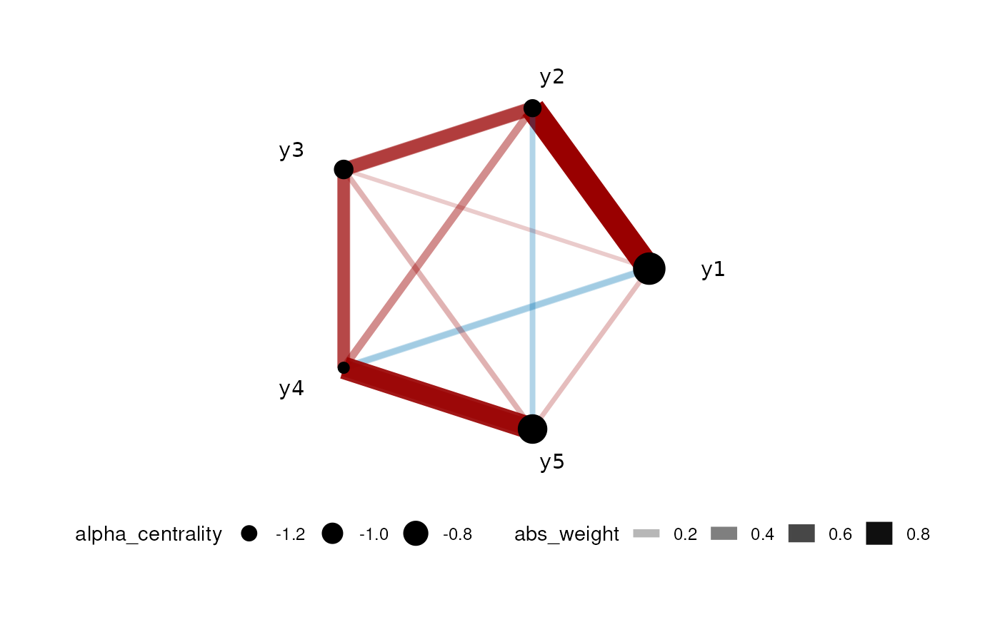
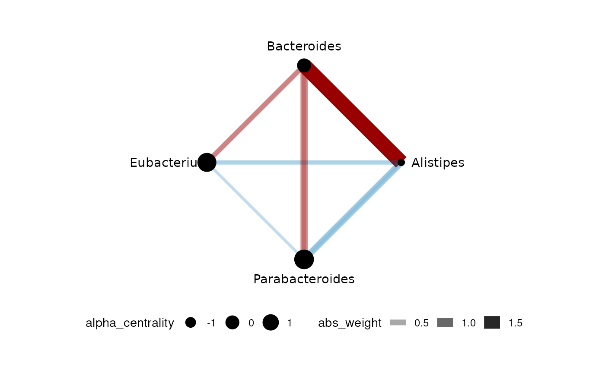

We also implemented the standard Graphical LASSO to infer a graph without predictors. The main interface is bGlasso. For more details, please see the reference.
GLASSO Network for Gaussian data
This is the case when data is Gaussian or can be transformed to Gaussian. We only need responses in this case. We use a 5-node AR1 model to simulate data:
set.seed(42)
dt <- simu_AR1(n=100,k=5, rho=0.7)
dt <- dt[,1:5]
head(dt)
#> y1 y2 y3 y4 y5
#> 1 1.2705558 0.94046103 -0.9356549 -0.5202384 -0.1928792
#> 2 0.6027324 0.06671259 0.9096216 1.3740787 0.9584424
#> 3 -0.1139447 -1.61460997 -0.1140354 -0.8013874 0.4673093
#> 4 0.5912523 2.13482891 2.2626483 1.8791249 2.3825324
#> 5 -2.1837420 -3.68267385 -2.3069358 -3.6243897 -2.2644276
#> 6 -2.2367855 -1.92498967 -3.2242525 -1.5495283 -1.4191343Unlike CARlasso, we do not really need to have a formula (because we do not have predictors, only responses). To use the Normal version, we should set link="identity" which is the default.

Some of the connections are actually due to predictors.
GLASSO Network for compositional data
This is common in the case of microbe-related studies and some ecological applications with relative abundances. For instance, microbe relative abundance come from sequencing and in this case, the sum of “abundance” is determined by the sequence depth rather than the real total abundance. The data is usually described as “compositional”.
We first extract only the responses that we want to include in the model:
dt <- mgp154[,c("Alistipes","Bacteroides",
"Eubacterium","Parabacteroides","all_others")]To run the composition model in bGlasso, we need to set link="logit"
gut_res <- bGlasso( data = dt,link = "logit",
n_iter = 2000,
n_burn_in = 1000, thin_by = 2)
#> Last response will be used as reference group
#>
#> Algorithm start...
#>
#> progress:
#>
#>
#> done
plot(gut_res)
Note that in this case the last one in the dataframe will be the reference level (all_others in this case).
GLASSO Network for counting data
This is common in a lot of ecological applications. For instance, number of seedlings within a site. The responses are counts rather than continuous. We will use the same compositional data as before to illustrate the counts model. However, it is important to note that relative abundances should not be considered as counts. To distinguish between compositional and count data, one can ask the question: is the sum decided by us? If yes, we want to use compositional models.
To run the count model, we need to set link="log". Note that we only include the first 4 responses:
gut_res <- gut_res <- bGlasso( data = dt[,1:4],link = "log",
n_iter = 2000,
n_burn_in = 1000, thin_by = 2)
#> Algorithm start...
#>
#> progress:
#>
#>
#> done
plot(gut_res)